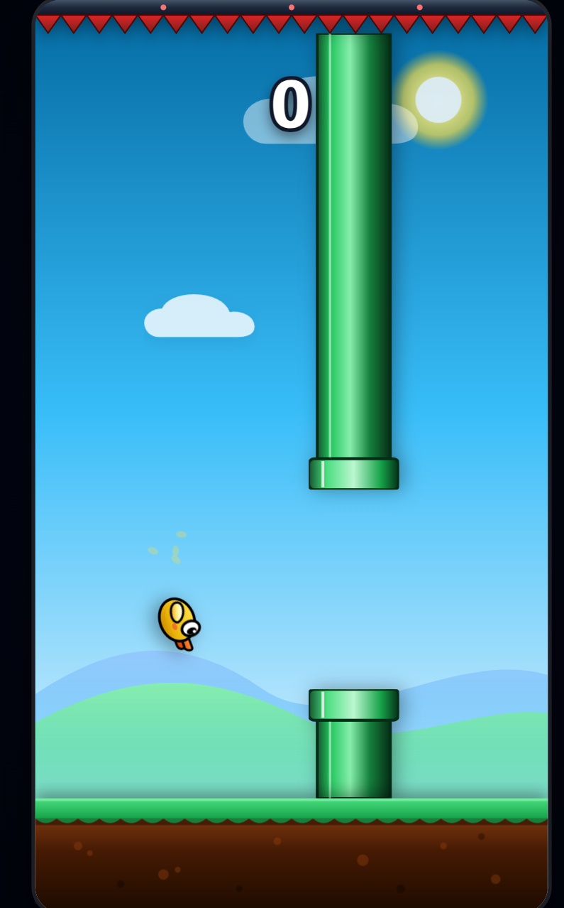
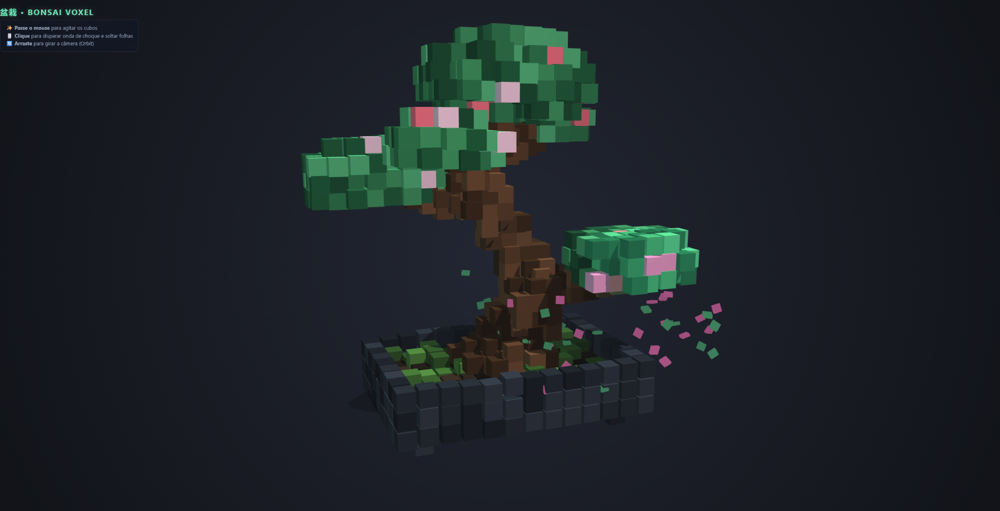
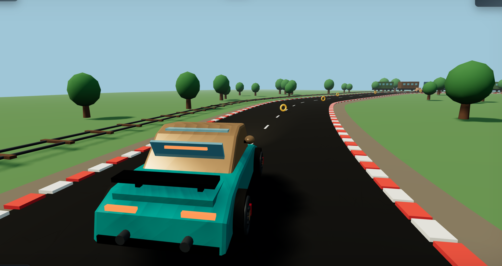

TEASER 01Game generation
Prompt → código → mundos jogáveis.
8B TOTAL / ~1B ACTIVE
Um modelo já disponível, quantizado e pós-treinado quase inteiramente para código.
Local-first. Não é um chatbot. É uma ferramenta para construir software.
BUILT, NOT ANSWERED.
VELUM Coder é um post-training especializado sobre unsloth/LFM2.5-8B-A1B, com 8B parâmetros totais e ~1B ativos. O modelo base já entrega a arquitetura eficiente; o VELUM concentra a especialização.
O post-training foi deliberadamente agressivo: aproximadamente 95% do material de especialização é código e 5% linguagem natural, o suficiente para preservar comunicação sem empurrar o modelo de volta para conversa genérica.
8B DISPONÍVEIS. ~1B TRABALHANDO.
A eficiência vem da base LFM2.5-8B-A1B. O VELUM não reivindica a arquitetura original: ele adiciona uma camada de especialização por fine-tuning e post-training focada em desenvolvimento de software.
8B totais e ~1B ativos herdados do LFM2.5-8B-A1B.
95% código, 5% linguagem natural para preservar instrução e comunicação.
LFM2.5-230M usado como draft model no stack de inferência.
FROM PROMPT TO RUNNING CODE.
Sem benchmark sintético por enquanto. Em vez de esconder isso, mostramos avaliações funcionais: projetos completos gerados pelo modelo e executáveis diretamente no navegador.

Game loop, obstáculos, colisão, score, animações e interface.
TESTAR JOGO ↗

Corrida 3D com câmera de perseguição, pista, trem e collectibles.
TESTAR JOGO ↗$ velum run
model: VELUM-8B
mode: local
focus: code
> crie um jogo 3D com uma pista,
moedas e um trem ao lado da estrada
✓ planning architecture
✓ generating game loop
✓ building scene
✓ wiring controls
✓ runnable output
BUILD COMPLETE.IDEA IN. SOFTWARE OUT.
O objetivo do post-training é fazer o modelo operar como ferramenta de desenvolvimento: entender intenção, estruturar solução, gerar código, corrigir erros e iterar.
AVAILABLE NOW · QUANTIZED · HUGGING FACE
Baixe as versões quantizadas diretamente no Hugging Face e rode localmente no seu próprio stack.
ABRIR NO HUGGING FACE ↗| Base model | unsloth/LFM2.5-8B-A1B |
|---|---|
| Draft model | LFM2.5-230M |
| Parâmetros | 8B total · ~1B active |
| Post-training | 95% code · 5% language |
| Uso | Código / desenvolvimento de software |
O orçamento de compute foi priorizado no treinamento e post-training na H100. Ainda não rodei uma bateria padronizada completa como HumanEval/MBPP com metodologia reproduzível. Em vez de preencher a página com números parciais, esta release mostra avaliações funcionais e projetos executáveis. Eles demonstram capacidade prática, mas não substituem benchmarks padronizados.
A distribuição pública é do modelo quantizado. Dataset de treinamento, pipeline de treinamento e outros artefatos internos não fazem parte desta release.
Baixe. Rode localmente. Aponte para código.